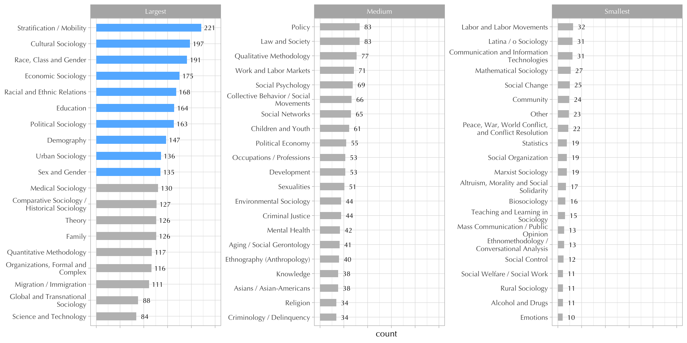

Note. The visualization provided below is provisional. I need to email someone at the ASA and politely ask for permission to use the full dataset.
Sociologists in the USA like to describe sociology as the most heterogeneous social science of all, to the point that some seem to think of it as a miniature version of all social science. Andrew Abbott (2001) claims sociology’s defining characteristic is “the fact that the discipline is not very good at excluding things from itself.” In this view, the lack of “internal cohesion” is the cost we’ve paid in exchange for occupying a central place in the social science landscape (Moody and Light 2006).
It is the most heterogeneous social science, which is perhaps another way of saying that it has been less successful at institutionalizing itself as a discipline than its close relatives. Unlike economics, it does not have a core kit of analytical tools and models codified in textbooks and widely accepted as legitimate both inside and outside the field… Unlike political science, on the other hand, sociology does not have a well-defined empirical core to unify it, either.
The absence of a disciplinary core has been celebrated by many as some unique form of academic freedom.
This is the reason why many people claim they chose to become a sociologist.
I chose sociology because more than any other social science sociology would let me do what I pleased. If I went into sociology, I wouldn’t have to make up my mind what to do.
—Andrew Abbott
Whey, then, did I choose sociology as an academic home?
Of all the available social sciences, sociology seemed to me to be the least disciplinary; it had the fuzziest boundaries. But even more significantly, sociology has valued its own marginal traditions in a way that other social sciences don’t.
—Erik Olin Wright
Glass half-empty
Others are less optimistic.
Presumably, we are not as interdisciplinary as we’d like to believe.
…most sociologists don’t really get interdisciplinarity. Whether we acknowledge it or not, most of us have internalized a sociological supremacy that makes us believe our field’s insights are more important, more complete, more nuanced than those of other scientists (Healy 2017). This cultural background of intellectual superiority helps create what Lizardo (2014) called the “Comtean schema”—the implicit belief that all proper interdisciplinary research should take the institutional form of a subfield of sociology.
In a brilliant insight, Lizardo noted that sociologists create virtual “avatars” of other disciplines within sociology instead of working with their real-world counterparts. That is, rather than engage with economists, we create “economic sociology”; rather than engage with political science, we have “political sociology”; rather than engage with cultural evolution or cognitive science, we invent “the sociology of culture and cognition,” and so on. This fools us into thinking that we’re being interdisciplinary when, in reality, “[t]hese subdisciplinary avatars have been created by sociologists for sociological consumption” (Lizardo 2014:985).
When a sociologist joins the American Sociological Association (ASA), they have the opportunity to choose up to four “areas of interest.” For example, I chose (1) Theory; (2) Quantitative Methodology; (3) Organizations, Formal and Complex; and (4) Law and Society. And I would probably choose something different on another day.
So, I created a dataset containing the areas of interest of over 1,000 individuals associated with 20 sociology programs in the USA. This dataset is provisional, but see Table 1 in case you are curious about the sample.
Each of these individuals chose anywhere between one and four areas of interest. Figure 1 highlights the ten largest areas of interest in blue . The largest is stratification/mobility, which gives credence to the idea that inequality defines the subject-matter of sociology. Among the top ten we also find what some may describe as subdisciplinary avatars—Cultural, Economic, and Political Sociology—which gives credence to the idea that sociology is a miniature version of all social science. Furthermore, the idea that sociology is mostly concerned with race, class, and gender is also well represented in this top ten.

Figure 1: Areas of Interest in The Dataset
Figure 1, however, doesn’t give us any picture of the “structure” of the sociological areas of interest—i.e., the pattern of connections which some may describe as coherency. This is what the next section is all about.
Two-Mode Networks
The direct ties between individuals and areas can be transmogrified—via simple matrix multiplication —into indirect ties among areas (Breiger 1974; Agneessens and Everett 2013). The resulting matrix is sometimes called a two-mode projection.1
Here, we start with a \(1112 \times 61\) incidence matrix \(\mathbf X\) (with rows representing individuals and columns representing areas of interest. We transform \(\mathbf X\) into a new \(61 \times 61\) adjacency matrix \(\mathbf A\) with each cell \(a_{ij}\) corresponding to the number of “shared” or “intersecting” individuals between areas \(i\) and \(j\).
The diagonal of \(\mathbf A\) contains the total number of individuals that chose each area, which corresponds to the same numbers in Figure 1.
The resulting network, unfortunately, is very dense. It only takes one single individual with idiosyncratic tastes to create ties among four otherwise disconnected areas. As a result, the “structure” is one in which everything is connected to everything else, as in Figure 2.2
Figure 2: Full Network (Dense). The colored nodes indicate groups found via the Louvaine community detection algorithm. I wouldn’t read too much into this graph.
Add a couple of surprising lack of connections e.g., marxists, etc. CLiking around!!
Because projections, like the one in Equation 1, result in very dense networks, researchers have found ways to “trim” uninformative ties or extracting “network backbones.” These approaches turn HYPOTHESIS TEST
figs a and b show the result of using one such technique disparity filter…
If the links between individuals and areas of interest was random, the following procedure would result in only isolate nodes.
Footnote about how the choice of algorithm and threshold is rarely discussed in most publications.
For example, researchers working with text-networks usually “trim” uninformative edges (or “sparsify” the similarity matrix). Fuhse et al. (2020), Hoffman et al. (2018), Bail (2016). This step is usually skimmed over in most publications.
This object looks like it could be a bipartite projection. If so, consider extracting the backbone using a model designed for bipartite projections: sdsm, fdsm, fixedfill, fixedrow, or fixedcol.
=== Suggested manuscript text and citations ===
We used the backbone package for R (v2.1.2; Neal, 2022) to extract the unweighted backbone of a weighted and undirected unipartite network containing 61 nodes. An edge was retained in the backbone if its weight was statistically significant (alpha = 0.05) using the disparity filter (Serrano et al., 2009). This reduced the number of edges by 96.3%, and reduced the number of connected nodes by 34.4%.
Neal, Z. P. 2022. backbone: An R Package to Extract Network Backbones. PLOS ONE, 17, e0269137. https://doi.org/10.1371/journal.pone.0269137
Serrano, M. A., Boguna, M., & Vespignani, A. (2009). Extracting the multiscale backbone of complex weighted networks. Proceedings of the National Academy of Sciences, 106(16), 6483-6488. https://doi.org/10.1073/pnas.0808904106
To do: clean up labels
This object looks like it could be a bipartite projection. If so, consider extracting the backbone using a model designed for bipartite projections: sdsm, fdsm, fixedfill, fixedrow, or fixedcol.
This object looks like it could be a bipartite projection. If so, consider extracting the backbone using a model designed for bipartite projections: sdsm, fdsm, fixedfill, fixedrow, or fixedcol.
This object looks like it could be a bipartite projection. If so, consider extracting the backbone using a model designed for bipartite projections: sdsm, fdsm, fixedfill, fixedrow, or fixedcol.
This object looks like it could be a bipartite projection. If so, consider extracting the backbone using a model designed for bipartite projections: sdsm, fdsm, fixedfill, fixedrow, or fixedcol.
This object looks like it could be a bipartite projection. If so, consider extracting the backbone using a model designed for bipartite projections: sdsm, fdsm, fixedfill, fixedrow, or fixedcol.
We used the backbone package for R (v2.1.2; Neal, 2022) to extract the unweighted backbone of a weighted and undirected unipartite network containing 61 nodes. An edge was retained in the backbone if its weight was statistically significant (alpha = 0.05) using the disparity filter (Serrano et al., 2009). This reduced the number of edges by 96.3%, and reduced the number of connected nodes by 34.4%.
Serrano, M. A., Boguna, M., & Vespignani, A. (2009). Extracting the multiscale backbone of complex weighted networks. Proceedings of the National Academy of Sciences, 106(16), 6483-6488. https://doi.org/10.1073/pnas.0808904106
Sample
Sample
n
%
Northwestern University
84
7.55%
University of Michigan-Ann Arbor
76
6.83%
University of Chicago
72
6.47%
Harvard University
69
6.21%
University of Wisconsin-Madison
68
6.12%
Stanford University
66
5.94%
University of Pennsylvania
66
5.94%
Cornell University
65
5.85%
Brown University
62
5.58%
New York University
61
5.49%
Princeton University
59
5.31%
Columbia University
47
4.23%
UC Berkeley
46
4.14%
Ohio State University
45
4.05%
Duke University
42
3.78%
Yale University
42
3.78%
University of California-Los Angeles
41
3.69%
University of North Carolina-Chapel Hill
36
3.24%
Indiana University-Bloomington
33
2.97%
University of Texas-Austin
32
2.88%
Total
1,112
100%
Table 1:
Number of individuals extracted from the ASA member directory
References
Abbott, Andrew. 2001. Chaos of Disciplines. University of Chicago Press.
Breiger, Ronald L. 1974. “The Duality of Persons and Groups.”Social forces 53(2): 181190.
Domagalski, Rachel, Zachary P. Neal, and Bruce Sagan. 2021. “Backbone: An r Package for Extracting the Backbone of Bipartite Projections.”Plos one 16(1): e0244363.
Healy, Kieran. 2012. “Sociology.” Pp. 90–122 in. New York: Blackwell.
Knoke, David, Mario Diani, James Hollway, and Dimitris Christopoulos. 2021. Multimodal Political Networks. Cambridge University Press.
Moody, James, and Ryan Light. 2006. “A View from Above: The Evolving Sociological Landscape.”The American Sociologist 37(2): 6786.
Opsahl, Tore. 2013. “Triadic Closure in Two-Mode Networks: Redefining the Global and Local Clustering Coefficients.”Social networks 35(2): 159167.
Vaisey, Stephen. 2021. “Welcome to the Real World: Escaping the Sociology of Culture and Cognition.”Sociological Forum.
Footnotes
The original network represented by \(\mathbf X\) goes by many names—e.g, affiliation networks, bipartite graphs, two-mode network, etc.↩︎
Knoke et al. (2021) [pp. 36] note three problems with using this sort of projection. First, it entails a loss of “identity information” on one of the two node sets—e.g., the cell entries in \(\mathbf A\) don’t reveal the specific individuals shared across areas. Second, it results in very dense networks, which leads to biases in network measurements—e.g., an artificially high number of triangles [see Opsahl (2013)]. Third, it obscures the generative process behind tie formation.↩︎